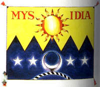

Characters
Characters Places
Places Stories
Stories Species
Species Organizations
Organizations Glossary
Glossary Transportation
Transportation Monsters
Monsters Jobs
Jobs Summons
Summons Items
Items Magic/Skills
Magic/Skills Weapon Types
Weapon Types In-Crossovers
In-Crossovers Ex-Crossovers
Ex-Crossovers Release Dates
Release Dates Name Origins
Name Origins Famous Moments
Famous Moments Music Database
Music Database Features
Features Game Help
Game Help Game Evolution
Game Evolution Square Art
Square Art Fan Flash
Fan Flash Final Fantasy Forums
Final Fantasy Forums Updates
Updates Site Info
Site Info Feedback
Feedback Full Index
Full Index Links
Links Staff
Staff- Agart
- A town on an island, Agalt was descended from dwarves, hence all their shops sell Iron items. The reason they live on the upper world? The entrance to the lower world, which was sealed, is on a nearby mountain top.
- Antlion Cave
- The Antlion guards the Desert Light, the only thing which can heal Rosa's heat stroke.
- Babel Giant, Bab-il Giant (4a)
- An enormous war machine created by the eight crystals; Cecil must enter it and destroy the main CPU. The four emperors return for a final battle here.
- Baron Town/Castle
- The starting point for the game is the headquarters of the pseudo-evil empire of Baron, whose king is intent on capturing all of the Crystals for his own dark purposes, which proves to be the release of Zemus. The king of Baron is really Cagnazzo, one of the four Emperors under Golbez. The true king is actually Odin, who was killed by Cagnazzo a while before the game's storyline began. Baron's elite air force is called the Red Wings (Biggs and Wedge anyone?), the head of which is Cecil... at least until he's booted for having a conscience. Baigan, the Captain of the Guards, snitches on him and his longtime friend Kain. Cid and his daughter, and Rosa and her mother, live in the town surrounding the castle. The town and castle are connected by an underground waterway. There's also a teleportational device called the Devil's Road leading to Mysidia.
- Cave of Bahamut
- The Phantom God is Bahamut, who lives here on the Moon and challenges only the best of the best.
- Cave of Summons
- The name says it all, really. The floor tiles here have some lava someone illegally parked, so it will harm you unless you're in Float mode.
- Crystal Palace
- FuSoYa lives here and holds the eight Crystals of the Moon. The passage to the Moon's Core opens up after the Babel Giant has been defeated.
- Damcyan Castle
- Ruled by Prince Gilbert, and home to the Fire Crystal, the castle is unfortunately strafed by the Red Wings under Golbez's control, killing Gilbert's lover Anna. Cecil and company meet inside and try to cheer him up. The castle features its own private hovercraft.
- Dwarf Castle
- Giott rules here with his daughter Luca at hand. The dwarves are cheerful and brave compatriots who have an excellent artillery at hand to battle Golbez. Golbez himself shows up here to steal the dwarves' crystal; he is rebuffed by the appearance of Rydia.
- Eblan Castle
- The ruins of the royal castle of Eblan is home to quite a nice treasure trove, if you can get past the monsters.
- Eblan Cave
- The royal family of Eblan, who for some reason are all ninjas, relocated to the cave south of the upper-world Tower of Babel after their castle was destroyed. The cave leads directly into the Tower, and Edge tries to get into it by himself, without luck. Cecil and company help him out and he does them a good deed in turn by getting them all into the Tower.
- Fabul Castle
- A society of Monks, where Yang is the head Monk. It holds the Wind Crystal, which is taken by an aggressive coup by Golbez and Baron's forces. It has a sea port nearby.
Fabul's crest. - Hummingway Home
- An entire population of Namingways (the guy who changes your name) lives in a small cave on the Moon. Most will just say nothing of value, but one will sell some awesome stuff and one is a real Namingway.
- Kaipo
- An oasis town in the Damcyan Desert, Rosa ends up here when she looks for Cecil after the Mist incident. This is also where Rydia officially joins Cecil.
- Kokkol's House
- The dwarf smith is back and he can again make the Excalibur sword from the Adamant ore.
- Land of Summons
- Not a very big world, actually. Chocobos and goblins run amok here, but they're all nice. Leviathan and Ashura rule from a smoky, dimension-twisted room which can be reached from the library; they'll join you if you defeat them.
- Lunar Path
- A winding passage, both overground and underground, which leads to the Crystal Palace. Some nice treasure and nasty monsters inside.
- Lunar Ruins (GBA only)
- Contained within the moai (Easter Island-esque face) on the moon and only accessible after the game is beaten, this 50-floor dungeon contains some of the hardest enemies and best weapons in the game as well as a trial for all of the main characters.
- Lunar Subterrane
- The final castle winds deep into the moon until it reaches the Moon's Core. The ultimate weapons are guarded here by very powerful monsters.
- Magnetic Cavern
- This is where the Dark Elf, who stole the Earth Crystal from Troia, lives. He put a damping force on the cave so that any metal equipment would freeze its wearer, rendering swords and armor useless. Gilbert luckily saves the day using his Echoer harp.
- Mist Cave
- The cave to Mist Town from Baron is home of a Phantom Beast called the Mist Dragon, who turns out to be very closely - too closely - connected with Rydia's mother.
- Mist Town
- Rydia's home is a haven for Summoners. They have very close connections with their Phantom Beasts. Unfortunately, Cecil and Kain come there with a bomb device (hidden even from them) which torches the city, leaving them gaping in horror.
- Mithril Town, Silvera (4a)
- This town is populated by status freaks: Mini people, Frogs, and Piggies. All the stores sell Mithril equipment. There's a cave nearby (past some coral reefs) with another Mini person who mines Adamant.
- Moon's Core
- Zemus has been sleeping here for eons, growing like a cancer. All of the enemies here are super-powerful. At the end of it lies Zemus and his alterego Zeromus... and the end of the game.
- Mount Hobs
- The pathway to this mountain is covered with ice, but Rydia can burn it down. Cecil and company meet Yang fighting a bunch of Bombs at the peak. Passing through the pathway leads to Fabul Castle.
- Mount Ordeals
- At the top of this mountain is a secret chamber in which dwells the spirit of KluYa, the Lunarian. He allows Cecil to become a Paladin by fighting his own dark side, and teaches Tellah the spell of Meteor. Cecil is ambushed by Milon here on his way with Palom and Porom. Compare with Citadel of Trials (1).
- Mysidia
- A town of wizards, it holds the Water Crystal. Cecil and the Red Wings took it by force, killing many innocents, by the order of the king of Baron. The Elder of Mysidia is willing to give Cecil a second chance, however, so he orders Palom and Porom to accompany (read: spy on) him as he enters Mount Ordeals to become a Paladin. There's a magical passage here called the Devil Road which leads to Baron Town. In 5 and 6, one of the random animals which can be called in battle (using the Animals [5] or Slot [6] command) is the Mysidian Rabbit, which does nothing in 5 and heals a small amount of HP in 6. (In 6a this was translated to Lagomorph.)

Mysidia's flag. - Sealed Cave
- The Darkness Crystal is in the deepest room here, but it's guarded by a Demon Wall. However, once Cecil tries to leave, Kain loses his wits and steals the Crystal from him! Every door in this cave is actually a rather tough monster.
- Silvera (4a)
- See Mithril.
- Sylvan Cave
- The Sylphs (fairy-type creatures) are nursing Yang to health at the bottom of this cave. The tiles are piled with liquid nitrogen or something like it which will really hurt if you walk on it.
- Tomra
- The town of dwarves lies on its own continent underground. The dwarves don't have much to add to the story, but they have the best equipment money can buy.
- Tower Of Babel, Tower of Bab-il (4a)
- The giant home of Rubicant, Emperor of Fire, stretches from the bottom of the earth to the sky. The lower section is the roaming grounds of Lugae the mad scientist, who did some really nasty things to Edge's parents, the king and queen of Eblan. The upper section holds all eight Crystals from both the upper and lower worlds. Yang risks his life by blowing up the lower Tower.
- Tower Of Zot
- This is where Golbez hides Rosa from Cecil; it's a tower floating in the air. Valvalis, Emperor of Wind under Golbez, rules here with her cohorts the Magus Sisters: Dog, Mag, and Rag.
- Troia Town/Castle
- The town of Troia has a huge acclaim with a dancer's show. The castle is ironically ruled by eight woman Clerics (the politically correct version of the Circle of Sages from 1), and all of its guards are female. Troia has the Earth Crystal, which Cecil must collect to save Rosa from Kain and Golbez. However, it was stolen by the Dark Elf...
- Waterways of Baron
- A cave leading from Kaipo to Damcyan Castle. It winds through a cave, a short outdoor trek, and a waterfall with an octopus in it.
Final Fantasy, all games and animation bearing the Final Fantasy name, and all characters in said games or animation are copyright their respective creators, including but not limited to Squaresoft, Square Enix, Square EA, Tokyo TV, and ADV Films.